Satış / demo kılavuzu · Yazdır: Ctrl+P → PDF olarak kaydet
ASP.NET Core 10 · Blazor · Satış / demo dokümanı
EnterprisePulse.NET — Teknik Kılavuz
Modül gruplarına göre ekran kılavuzu. Yetkiye göre menü öğeleri görünür; demo veri Pulse Teknoloji üzerindedir.
TR / ENCtrl+P → PDFEnterprisePulse.NET
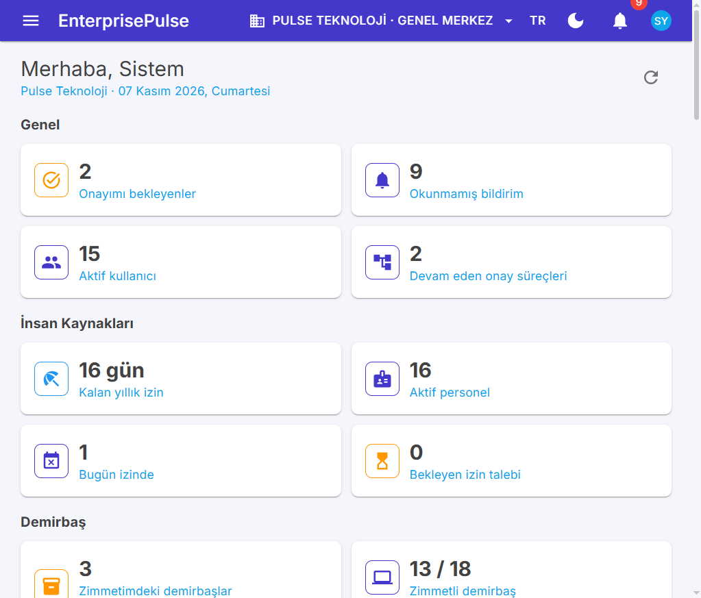
Gösterge paneli
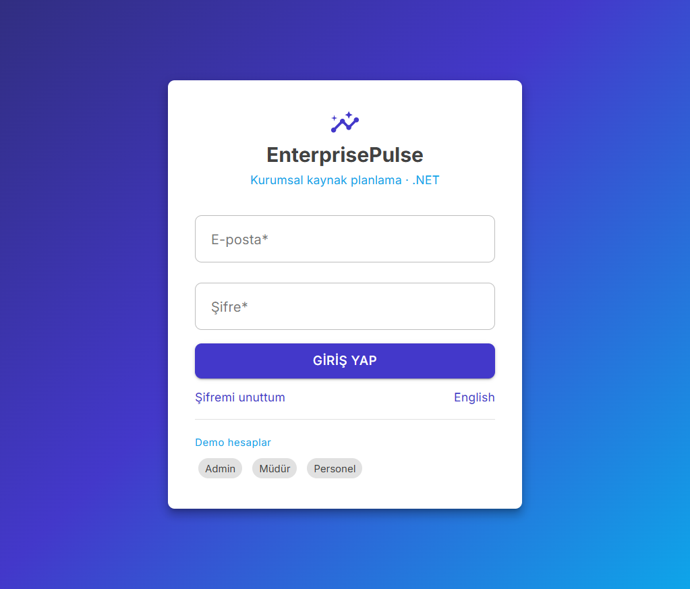
Giriş ekranı
Bu belge, c:\github\EnterprisePulse.NET deposundaki ASP.NET Core 10 yeniden yazımının geliştirici el kitabıdır. Amaç, bir modüle dokunmadan önce “kayıt nerede duruyor, iş kuralı hangi sınıfta, ekran metadata mı yoksa özel Razor mı” sorularını kod yollarıyla cevaplamaktır.
Kardeş stack’ler (NestJS / React ve Spring / Vaadin) aynı domain modelini taşır. Bu kılavuz yalnızca .NET çözümünü anlatır. Nest tarafındaki Redis ve BullMQ burada yoktur; karşılığı Hangfire + PostgreSQL’dir.
0. Bu belge hakkında
0.1 Kime yazıldı
Hedef kitle, Core / Api / Web üzerinde değişiklik yapan geliştiricilerdir. Kullanıcı kılavuzu değildir: ekran adımları, iş kuralının kodda nerede zorlandığını göstermek için kısaca geçer.
0.2 Belgenin sınırları
Varlıklar ve metadata.json elle yazılmaz. Kaynak Prisma şeması tools/codegen/source/schema/*.prisma dosyalarıdır. C# sınıfları src/EnterprisePulse.Core/Data/Generated/ altına üretilir.
İş kuralları üretilen entity’de durmaz. Modules/<Modül>/*Service.cs ve *Math.cs / *Rules.cs dosyalarındadır.
Liste ve basit kart ekranlarının çoğu metadata’dan gelir (/r/{resource}). Durum makinesi olan belgeler (fatura, iş emri, yevmiye, e-fatura) özel Razor sayfası ve özel Minimal API grubu kullanır. Bu sayfalar IResourceHook ile genel CRUD’dan kapatılır (ManagedRecordHook).
Demo verisi yalnızca Pulse Teknoloji (PULSE) şirketindedir. Pulse Lojistik (PULSE-LOJ) şirket, şube, rol ve yönetici üyeliğiyle açılır; operasyonel seed adımları ActAs(pulse.Id) ile çalıştığı için lojistik listeleri boştur. Bu kasıtlıdır.
0.3 Nasıl güncellenir
Şema değiştiyse node tools/codegen/emit-csharp.mjs çalıştırılır, EF migration eklenir.
Yeni bir belge akışı eklendiyse servis, endpoint, ResourceViews kaydı ve gerekiyorsa ISeedStep birlikte güncellenir.
Bu kılavuzdaki yollar o değişiklikle birlikte gözden geçirilir. Sınıf ve route adları koda birebir yazılmıştır.
0.4 Okuma sırası
Yeni gelen biri önce bölüm 1–3’ü, sonra dokunacağı modül bölümünü, en sonda bölüm 26’yı (test, seed, çalıştırma, codegen) okumalıdır. Modül bölümleri aynı şablonu kullanır: amaç, entity / DbSet, servisler, API kaydı, web sayfaları, seed, iş kuralları.
1. Stack ve bağımlılıklar
Gösterge paneli
1.1 Çalışma zamanı
| Katman | Teknoloji | Proje / dosya | | --- | --- | --- | | Hedef çerçeve | net10.0 | Üç csproj de TargetFramework olarak net10.0 kullanır | | HTTP API | ASP.NET Core Minimal API | src/EnterprisePulse.Api/Program.cs | | UI | Blazor Server + MudBlazor 8 | src/EnterprisePulse.Web | | ORM | EF Core 10 + Npgsql 10 | src/EnterprisePulse.Core/EnterprisePulse.Core.csproj | | Veritabanı | PostgreSQL 17 (compose imajı) | docker-compose.yml servisi postgres | | İş kuyruğu | Hangfire.AspNetCore 1.8 + Hangfire.PostgreSql 1.20 | API Program.cs, şema adı hangfire | | Gerçek zaman | SignalR hub /hubs/notifications | NotificationsHub | | Sözleşme | Swashbuckle 9, /swagger | API kökü / buraya yönlenir | | Kimlik | JWT Bearer (System.IdentityModel.Tokens.Jwt 8) | TokenService | | Parola | Argon2 (Konscious.Security.Cryptography.Argon2) | PasswordHasher | | İki adımlı doğrulama | Otp.NET | AuthService.SetupTwoFactorAsync | | Nesne deposu | S3 uyumlu RustFS, AWSSDK.S3 4 | StorageService, FilesService | | E-posta | MailKit 4 → Mailpit SMTP | MailService | | Dışa aktarma | ClosedXML (Excel), QuestPDF (PDF) | ExportService | | QR | QRCoder | demirbaş etiketi |
Web projesi Core’a proje referansı vermez. Tarayıcı ApiClient ile HTTP konuşur. API, Core’u AddEnterprisePulseCore(connection) ile açar.
JSON: enum’lar string, sayı string’ten okunabilir, döngüsel referans yok sayılır.
JWT. Hub isteklerinde access_token sorgu parametresi kabul edilir (/hubs yolu).
CORS, sabit pencere hız sınırı. Genel limit dakikada 300 (Testing ortamında 100.000). auth politikası dakikada 20 (Testing’de 1000). Red 429.
Hangfire PostgreSQL deposu, şema hangfire, PrepareSchemaIfNecessary. Testing dışında 4 worker.
Açılışta MigrateAsync. SeedOnStartup ise DataSeeder.SeedAsync. Testing dışında her IScheduledJobEurope/Istanbul saat dilimiyle recurring job olarak yazılır.
İş kuralları Guard.That (400) ve Guard.State (409 / durum) ile fırlatılır. Mesajlar kullanıcıya Türkçe gider; bu kılavuzdaki kurallar o metinlerden derlenmiştir.
Yansıma ile: IResourceHook, IWorkflowListener, ISeedStep, IDashboardProvider, IScheduledJob (hem arayüz hem somut tip), [ModuleService] ile işaretli sınıflar.
Yeni bir modül servisi CoreServices.cs içine satır eklemeden [ModuleService] ile DI’a girer. Zamanlanmış iş ayrıca IScheduledJob uygular; API açılışında Hangfire’a yazılır.
public partial class Program entegrasyon testlerinin WebApplicationFactory<Program> kullanması içindir.
2.3 EnterprisePulse.Web
Blazor Server. Durum Session (scoped) içindedir: jeton, şirket, şube, izinler, locale. ApiClient her istekte Authorization, x-company-id, x-branch-id ve Accept-Language gönderir. RealtimeClient SignalR ile bildirime abone olur. MetaCache/api/meta JSON’unu tutar; menü ve formlar buradan kurulur.
| Yol | Rol | | --- | --- | | Components\Pages\Auth\ | giriş, unutulan parola, sıfırlama | | Components\Pages\Resources\ | ResourceList.razor (/r/{Resource}), ResourceDetail.razor (/r/{Resource}/{Id}) | | Components\Pages\<Modül>\ | özel belgeler ve self-servis | | Components\Shared\HistoryPanel.razor | denetim geçmişi sekmesi | | Services\ResourceViews.cs | metadata ekranının üzerine kolon, aksiyon, sekme, özel detay href | | Services\Ui.cs | Texts, Fmt, Features | | Program.cs | MudBlazor, interactive server, ApiUrl |
ResourceViews statik kurucusu sırayla Platform, Hr, Assets, Inventory, Sales, Work, People, Ops, Accounting, Production çağırır. Bir kaynak burada yoksa genel metadata formu yeterlidir.
2.4 Testler ve codegen
tests\EnterprisePulse.UnitTests — saf fonksiyonlar (bordro/İK kuralları, amortisman, ticaret matematiği, muhasebe/üretim, platform). Postgres gerekmez.
tests\EnterprisePulse.IntegrationTests — ApiFactory 5442 üzerindeki Postgres’te ep_test_<8 hex> veritabanı açar, Hangfire’ı NoJobs ile değiştirir, ortam Testing (seed hız limiti gevşek, recurring job yazılmaz).
tools\codegen — emit-csharp.mjs, prisma.mjs, meta.mjs, tr-dict.mjs, source\schema\*.prisma, source\locales\tr.json ve en.json.
3. Çekirdek platform kalıpları
3.1 Çok kiracılık (CompanyId, ActAs, sorgu filtreleri)
Sözleşmeler src/EnterprisePulse.Core/Data/Contracts.cs içindedir. Codegen, zorunlu companyId (Uuid) alanı olan modele ITenantEntity, deletedAt varsa ISoftDelete, updatedAt varsa IUpdatedAt, Uuid id varsa IEntity ekler (tools/codegen/emit-csharp.mjs).
AppDbContext her CLR tipine ApplyFilter<T> uygular:
Yalnız kiracı: BypassTenant || CompanyId == TenantId
Yalnız soft delete: DeletedAt == null
TenantId ve BypassTenant, istek kapsamındaki CurrentUser üzerinden okunur. Filtre her sorguda güncel kimliği görür.
SaveChangesAsync üç yan etkiyi aynı anda yapar:
Yeni ITenantEntity ve CompanyId == Guid.Empty ise RequireCompanyId() yazar. Servisler şirketi elle doldurmak zorunda değildir.
IUpdatedAt güncellemelerinde UpdatedAt = UtcNow.
ISoftDelete üzerinde EntityState.Deleted yakalanır, durum Modified yapılır, DeletedAt set edilir. Fiziksel silme yoktur.
CurrentUser (Common/CurrentUser.cs):
ActAs(companyId, userId, superAdmin) önceki kimliği IDisposable ile geri yükler. Seed ve bazı işler bunu kullanır.
WithoutTenant() filtreyi kapatır. Giriş, şirket listesi, Hangfire ScheduledJobRunner ve DataSeeder’ın ilk bölümü bunu kullanır.
Has / Require: IsSuperAdmin tüm kodları geçer.
İstek doldurma (RequestContextMiddleware):
JWT sub → kullanıcı. Pasif hesap 401.
x-company-id ve x-branch-id başlıkları. Üyelik AuthService.ResolveCompanyAsync ile doğrulanır. Başlık yoksa varsayılan UserCompany.
İzin kümesi PermissionResolver: o şirketteki rollerin RolePermission kodları.
Accept-Languageen ile başlıyorsa locale en, aksi halde tr.
Şirket değiştirmek jetonu değiştirmez. Jeton yalnızca kullanıcı kimliğidir (sub, email, name). Şirket her istekte başlıktadır. Web üst çubuğu bunu Session içinde tutar.
Arka plan işi kullanıcı taşımaz. ScheduledJobRunner.RunAsyncWithoutTenant() açar, sonra iş kendi içinde şirket döngüsü kurar (örneğin AccountingService, ContractService). [DisableConcurrentExecution(600)] ve [AutomaticRetry(Attempts = 1)] Hangfire niteliğidir.
3.2 Metadata güdümlü arayüz
Kaynak dosya: src/EnterprisePulse.Core/Metadata/metadata.json (Core csproj içinde EmbeddedResource, logical name metadata.json).
MetadataStore gömülü JSON’u çözer ve her kaynağı CLR tipine bağlar. ResourceMeta alanları:
Menü öğesi resource doluysa bu yola, page doluysa özel sayfaya gider. Menü metadata.json içindeki navigation dizisidir. Öğe permission dizisi boşsa herkese, değilse kodlardan biri varsa görünür.
ResourceViews.Configure genel ekranı inceltir: kolon sırası, salt okunur alanlar, gizli çocuklar, oluşturmayı gizleme, CreateDialog, DetailHref (/assets/counts/{id} gibi), ResourceAction (POST {comment} veya özel Run), WorkflowEntity (onay şeridi).
ManagedRecordHook (AssetHooks.cs içinde soyut taban) genel POST/PATCH/DELETE’i Türkçe bir cümleyle reddeder. Belge, kendi servisinden geçmek zorundadır. Örnek: SalesInvoicesHook — “Satış faturaları fatura ekranından kesilir”.
GET /api/meta ham JSON’u döner (yetkili). Web formları alan etiketlerini buradan alır; ikinci bir çeviri dosyası UI’da tutulmaz. Locale metinleri codegen sırasında tools/codegen/source/locales/tr.json ve en.json ile şemadan birleşir.
POST /api/auth/login. AuthService.LoginAsync parolayı doğrular, isteğe bağlı TOTP ister. Başarıda access token gövdede, refresh hem gövdede hem refresh_token çerezinde (Path=/api/auth).
POST /api/auth/refresh çerez veya gövde. POST /api/auth/logout hash’i düşürür.
POST /api/auth/forgot-password ve reset-password hız sınırlıdır. Var olmayan e-posta da aynı genel mesajı döner.
Oturum açıkken: GET /api/auth/me, profil, parola, 2fa/setup|enable|disable.
İzin kodu biçimi modül:eylem. Katalog metadata.json → permissions. DataSeeder.SeedPermissionsAsync eksik kodları ekler; açıklama "{modül etiketi} - {eylem etiketi}".
Şirket açılışında CompanyBootstrap.InitializeAsync metadata’daki roles sözlüğünden üç sistem rolü kurar ve izin bağlarını her açılışta baştan yazar:
| Kod | Ad | Kapsam | | --- | --- | --- | | admin | Şirket Yöneticisi | Tüm kodlar. IsSystem = true | | manager | Müdür | Okuma ağırlıklı, satın alma / satış onayı, CRM yazma, destek güncelleme | | employee | Personel | files:read, files:create, workflow:start, settings:read |
Uç nokta filtresi RequirePermission("sales:create") listedeki her kodu ister. RequireAnyPermission birinin yetmesi için vardır (satın alma talebi: workflow:start veya purchasing:create). CurrentUser.IsSuperAdmin (seed’deki admin@enterprisepulse.dev) kod kontrolünü atlar. Demo müdür ve personel atlamaz.
Demo hesaplar (DataSeeder):
| E-posta | Parola | Üyelik | | --- | --- | --- | | admin@enterprisepulse.dev | Admin123! | Her iki şirkette admin, süper yönetici | | manager@enterprisepulse.dev | Manager123! | Her iki şirkette manager | | employee@enterprisepulse.dev | Employee123! | Yalnızca Pulse, employee | | ad.soyad@enterprisepulse.dev | Employee123! | 12 örnek personel |
Web: /workflow/inbox, /workflow/instances, /workflow/instances/{Id}. Liste ekranında ResourceView.WorkflowEntity set ise detayda onay şeridi çıkar (leave-requests).
Eşzamanlılık: geçiş tek satırlık koşullu güncelleme ile yapılır. 0 satır güncellenirse “Onay süreci başka biri tarafından güncellendi”.
3.5 Denetim, dosya, bildirim, numaralandırma
Denetim.AppDbContext.BuildAudit her ekleme / güncelleme / silmede AuditLog yazar. Atlanan tipler: AuditLog, Notification, RefreshToken, PasswordResetToken, NumberSequence, StockBalance, LotBalance, StockTransaction, StockMovementLine, StockMovementSerial, StockCountLine, JournalLine. PasswordHash, TwoFactorSecret, TokenHash değerleri [REDACTED]. CreatedAt / UpdatedAt diff’e girmez. Değişmeyen update audit üretmez. Web’de HistoryPanel bu JSON’u alan etiketleriyle gösterir.
Web: /notifications. Hub jetonu query string ile gider çünkü tarayıcı WebSocket’ine Authorization başlığı eklemez; API OnMessageReceived bunu okur.
Numara.NumberingService.NextAsync tek UPDATE ... RETURNING kullanır. Yıllık reset reset_yearly && current_year <> yıl ise next_value = 2 ve dönen değer 1 olur. Biçim Format: ZMT-2026-000042 (prefix-yıl-pad). Seri yoksa “Numara serisi tanımlı değil”. Seriler şirket açılışında metadata.json → sequences listesinden kopyalanır. Önek örnekleri: talep STA, sipariş SAS, teklif TKL, mal kabul MKB, alış faturası ALF, satış teklifi STK, satış siparişi SPS, irsaliye IRS, satış faturası FTR, iade IAD, tahsilat TAH, ödeme ODM, çek CEK, senet SNT, demirbaş DMB, zimmet ZMT, sayım DSY / SAY, stok hareketi STH, izin IZN, personel PRS (yılsız), cari CAR (yılsız), aday ADY, fırsat FRS, masraf MSF, proje PRJ, bordro BRD, ilan ILN, destek TKT, sözleşme SZL, yevmiye YEV, e-fatura EPF, e-arşiv EPA, iş emri IEM.
3.6 Hangfire işleri ve Nest Redis / BullMQ
Orijinal Nest süreci iki parçaya ayrılırdı: BullMQ kuyruğu (e-posta, bildirim) ve Redis üzerinde tekrarlayan işler. .NET tarafında ikisi de Postgres’teki Hangfire şemasına iner. Ayrı bir Redis servisi compose’da yoktur.
Anlık iş: MailQueue.Send → IBackgroundJobs.Enqueue<MailService>(...). API’de gerçek sınıf HangfireJobs. Testte NoJobs kuyruğu yutar, SMTP’ye gitmez.
Pano: http://localhost:5100/hangfire. LocalDashboardFilter uzak IP’yi reddeder. Testing ortamında ne sunucu ne recurring kayıt vardır; aksi halde test süreci şemayı ve kilitleri kirletir.
Gösterge paneli ayrı bir iş değildir. GET /api/dashboard tüm IDashboardProvider örneklerini Order ile çağırır. Sağlayıcı izni yoksa null döner, kart basılmaz. Sıra kabaca: platform 0, İK 10, demirbaş 20, stok 30, satış 40, CRM/masraf/proje 50–60, üretim 55, muhasebe 60, e-fatura 65, bordro ve insanlar 70–85, operasyon 90–105.
3.7 Şirket iskeleti
CompanyBootstrap her yeni şirkete, belge kesilmeden önce şunları koyar:
KDV: KDV20 (varsayılan), KDV10, KDV1, KDV0.
Birimler: ADET, KG, LT, M, M2, KOLI, SAAT.
Numara serileri (metadata).
Setting anahtarı general: dd.MM.yyyy, Europe/Istanbul, mali yıl başlangıç ayı 1.
Üç rol ve üç onay tanımı.
Para birimleri şirket değil, globaldir: TRY, USD, EUR, GBP. Kurlar DataSeeder.SeedCurrenciesAsync ile bugünün tarihi için yazılır (TRY hariç). Ticaret servisi kur yoksa “kuru elle girin” der.
4. Kimlik ve platform
Amaç
Kullanıcı, şirket, şube, rol, ayar, dosya, bildirim ve onay kutusunu modüllerden bağımsız tutmak. İş modülleri CurrentUser ve NotificationService dışında platform tablosuna yazmaz.
Metadata listeleri: /r/users, /r/companies, /r/branches, /r/audit-logs, /r/number-sequences, /r/currencies, /r/exchange-rates, /r/tax-rates, /r/units, /r/workflow-definitions. Menüde “Sistem” grubu bunları users:read, roles:read, settings:read, audit:read ile süzer.
Seed
Ayrı bir ISeedStep yoktur. DataSeeder.SeedAsync izin, kur, iki şirket (PULSE, PULSE-LOJ), şubeler (Merkez / Ankara / İzmir ve lojistik Merkez Depo), CompanyBootstrap, demo kullanıcılar. Modül adımları bundan sonra Order ile gelir.
İş kuralları
Access token şirket taşımaz. Yanlış x-company-id 403 (“Kullanıcı hiçbir şirkete bağlı değil” veya üyelik yok).
Beş başarısız girişten sonra hesap LockMinutes kadar kilitlenir.
Refresh token düz metin saklanmaz; TokenHash SHA-256’dır. Audit bu alanı kırmızıya boyar.
Rol kaydı her bootstrap’te metadata’daki kod listesiyle yenilenir. Veritabanında elle eklenen RolePermission bir sonraki API açılışında silinir. Kalıcı izin değişikliği metadata.json rollerindedir.
admin rolü IsSystem olduğu için genel silme kancası onu korur (RolesHook).
5. İnsan kaynakları (Hr)
Amaç
Organizasyon, personel sicili, izin bakiyesi ve çok adımlı izin onayı, vardiya planı, puantaj ve self-servis giriş/çıkış.
Personel, departman ve pozisyon kartlarının CRUD’u genel /api/r/employees|departments|positions üzerindedir. İşten çıkış genel PATCH ile yapılmaz; ResourceViews “İşten çıkış” aksiyonu diyalog açar.
HrSeed (Order = 10). Departmanlar: YON, BT, IK, FIN, SAT, OPS. On iki pozisyon (genel müdürden lojistik uzmanına). DataSeeder.SampleEmployees artı Deniz Aksoy ve Kerem Polat sicile bağlanır. İzin türleri, resmi tatiller, vardiyalar, iki aylık puantaj ve örnek izin talebi (biri onay akışında). Sonraki tüm seed’ler bu personel ve MUS-* carilerine dayanır; İK adımı düşerse CRM ve bordro erken döner.
İş kuralları
İzin günü, hafta sonu ve Holiday düşülerek WorkingDaysAsync ile hesaplanır. Birim test HrRulesTests.
requiresBalance türlerde bakiye yetmezse talep açılmaz. Onay (LeaveWorkflowListener) bakiyeyi düşer. İptal, onaylanmış talepte günü iade eder (iptal onay metni ResourceViews içindedir).
İşten çıkış yalnızca ACTIVE personelde görünür. Çıkış tarihi ve gerekçe salt okunur alanlardır; servis yazar.
Giriş/çıkış, oturumdaki kullanıcının personel kartına bağlıdır. Kartı olmayan kullanıcı attendance/me üzerinde personel bulamaz.
Vardiya planı toplu PUT’tur; satır başına genel CRUD yoktur (ShiftsHook plan ekranına yönlendirir).
Hakediş POST /api/hr/leave-balances/accrue yıl için eksik bakiye satırlarını açar. Var olan satırın hakkı PATCH ile değişir (leave:update).
6. Demirbaş ve zimmet (Assets)
Amaç
Demirbaş kartı, kategori / konum, zimmet-iade-devir, bakım, amortisman, QR etiket ve sayım.
ResourceViews.Assets: kart kolonları etiket, ad, kategori, marka, model, durum, kondisyon, konum. Aksiyonlar duruma bağlıdır: IN_STOCK iken zimmet ve hurda, ASSIGNED iken devir ve iade. QR GET /api/assets/{id}/label indirir. Sekmeler: amortisman ve etiket, zimmet geçmişi, bakım. Sayım oluşturma AssetCountDialog, detay /assets/counts/{id}. Zimmet listesi salt okunur, detay belge sayfasıdır.
Seed
AssetSeed: altı kategori (bilgisayar 36 ay, mobil 24, monitör 48, ofis / mobilya / araç 60). Konumlar, 16 örnek demirbaş, zimmet ve bakım, iki sayım. Süper yöneticinin personel kartı (genel müdür) ve ona bağlı cihazlar bu adımda açılır.
İş kuralları
Durum makinesi: IN_STOCK, ASSIGNED, IN_MAINTENANCE, RETIRED, LOST. Hurda yalnızca depodaki karta açıktır. Zimmetli kart hurdaya ayrılamaz; önce iade.
Zimmet belgesi numara serisi ASSET_ASSIGNMENT (ZMT-yıl-sıra). Personel teslim aldığını acknowledge ile işaretler.
Devir, eski zimmeti kapatıp yenisini açar; iki açık zimmet oluşmaz.
Sayım satırı elle CRUD edilmez. Barkod / etiket scan ile düşer. Tamamlanınca farklar kart durumuna işlenir.
Amortisman usefulLifeMonths üzerinden doğrusal hesaplanır. Tutar kartta saklanan bir bakiye değil, okuma anında Depreciation ile üretilir.
Kategori ve konum kodu şirket içinde benzersizdir (AssetCategoriesHook, AssetLocationsHook).
7. Stok ve depo (Inventory)
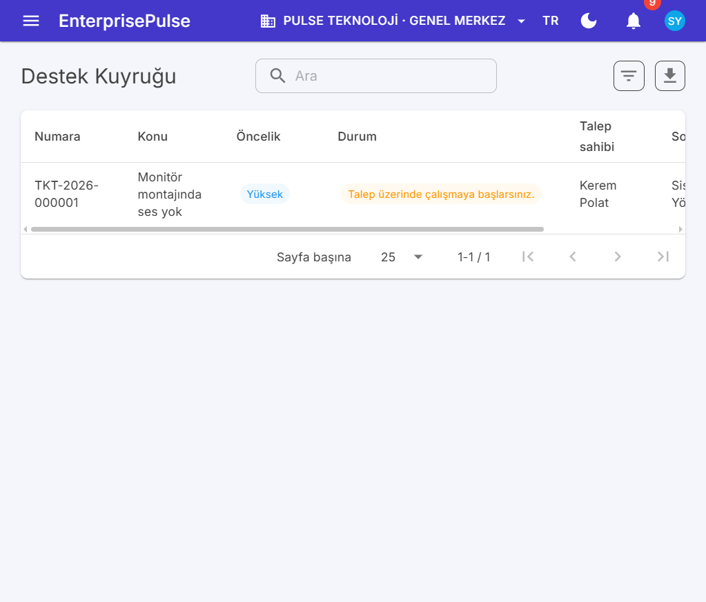
Destek kuyruğu
Amaç
Ürün, varyant, depo, lot, seri, anlık bakiye, giriş / çıkış / transfer / düzeltme ve sayım. Satın alma, satış ve üretim stok hareketini bu servisten geçirir; kendi StockBalance satırını yazmaz.
Menü “Stok durumu” özel sayfadır; ürün ve hareket listeleri metadata’dır. ResourceViews.Inventory hareket oluşturmayı /inventory/movements/new adresine çevirir.
Seed
InventorySeed üç işi birden yapar: açılış stok fişleri, tamamlanmış ve açık sayım, cariler (MUS-001, MUS-002 ve tedarikçiler), satın alma talebi, rakip tedarikçi teklifleri, sipariş, mal kabul ve alış faturası. Satış seed’i PRD-MONITOR, PRD-MOUSE-SYH, SRV-KURULUM ve MUS-001 / MUS-002 yoksa hiç belge kesmez. Depo kodu MRK.
İş kuralları
Hareket işlendikten sonra satır değişmez. Düzeltme yeni bir hareket fişidir (STOCK_MOVEMENT, önek STH).
Negatif bakiyeye izin verilmez. Lot tüketimi FEFO / seçilen lot ile StockMovementService içinde çözülür; üretim tamamlaması da aynı kapıyı kullanır.
Seri numarası hem girişte doğar hem çıkışta durum değiştirir. Üretim modülü TrackingType.SERIAL ürünü reçeteye koymaz (ayrı kural, bölüm 24).
Hizmet kartı (ProductType hizmet, örnek SRV-KURULUM) stok taşımaz. Seviye sorgusu includeServices ile ayrılır.
Sayım tamamlanınca fark kadar sayım hareketi kesilir. İptal, fark fişi üretmez.
Ortalama maliyet StockMath ile artan girişlerde yeniden hesaplanır. Satışın SMM’si ve üretimin malzeme tutarı bu maliyeti okur.
Qty gösterimi StockMovementService.Qty ile gereksiz sıfırları atar. Hata metinleri (“en fazla N faturalanabilir”) bu biçimi kullanır.
8. Satın alma (Purchasing)
Amaç
Talep → onay → tedarikçi teklifi → sipariş → mal kabul → alış faturası. Stok ve cari bu zincirin yan etkisidir.
Listeler /r/purchase-requests vb. HideCreate ile genel forma kapanır; başlık düğmesi özel sayfaya gider. Onay kutusundaki talep, WorkflowEntity üzerinden izlenir.
Seed
InventorySeed (Order = 30): onaylı bir talep, iki tedarikçi teklifi (karşılaştırma ekranı dolsun diye), kısmen teslim edilmiş sipariş ve alış faturası. Gerçek GoodsReceiptService çağrılır; stok “elle bakiye” ile şişirilmez.
İş kuralları
Talep onayı PURCHASE_REQUEST akışıdır (müdür, sonra yönetici). PurchaseRequestWorkflowListener onayda talebi siparişe hazır hale getirir, rette kapatır.
Teklif kabulü sipariş açar. Ret, aynı talepteki diğer teklifleri düşürmez; karşılaştırma compare ucu fiyat ve vade yan yana koyar.
Sipariş yalnız taslakken PUT edilir. Onaydan sonra satır değişmez. İptal, mal kabul görmüş satırı olan siparişte sınırlıdır.
Mal kabul, açık sipariş miktarını aşamaz. Kabul StockMovementService ile depoya giriş yazar. Hizmet satırı stok hareketi üretmez.
Alış faturası cariyi borçlandırır (PartnerLedgerService) ve muhasebe aday fişi olarak bekler (JournalSource.PURCHASE_INVOICE). Dönem kilitliyse fiş ertelenir.
Belge satırları TradeService kurallarına uyar: miktar > 0, fiyat ≥ 0, iskonto ve KDV 0–100.
9. Satış (Sales)
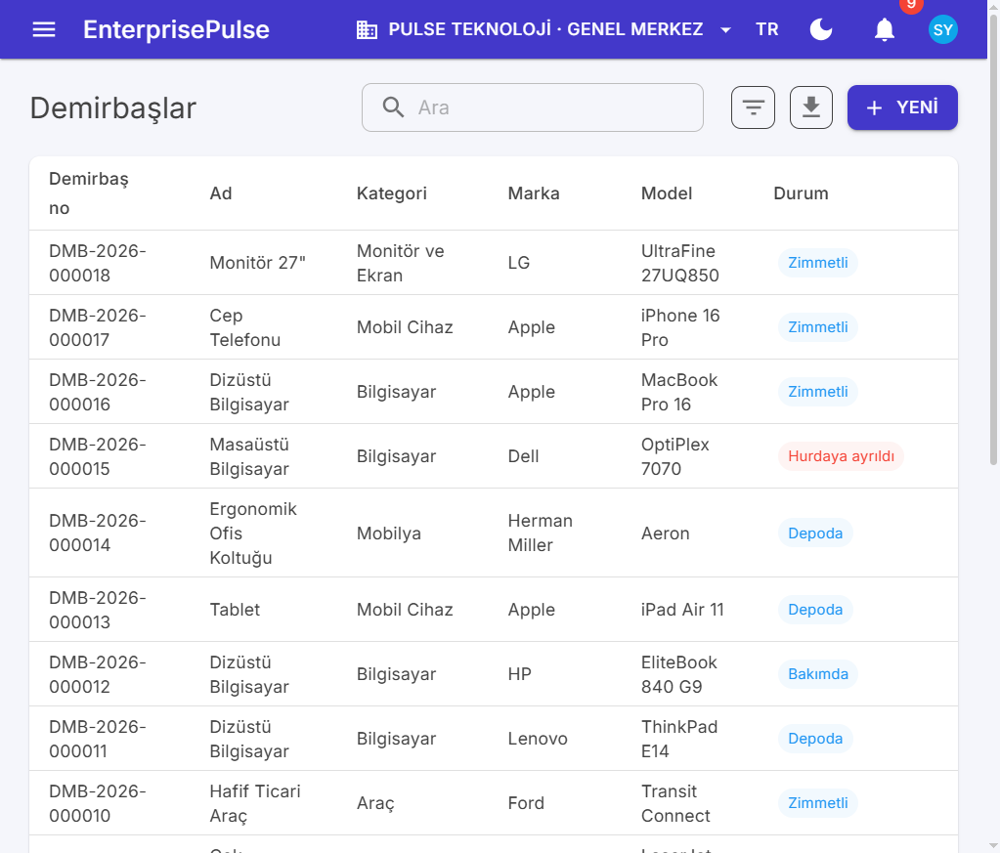
DemirbaşlarDemirbaş detayı
Amaç
Teklif → sipariş onayı ve stok rezervasyonu → irsaliye → fatura → iade. Fatura kesilince e-fatura kuyruğu isteğe bağlı tetiklenir.
SalesSeed: üç kasa/banka (KASA-MRK 25.000 TRY, BANK-TRY 180.000, BANK-EUR 4.000) TreasuryService ile açılır. Sonra kabul edilmiş bir teklif kısmi teslim ve kısmi tahsilata yürür; bir teklif açık kalır; portföyde bir çek durur. Stok hareketi yalnızca irsaliyeden gelir. Seed, SalesQuotes doluysa belge kısmını atlar (kasa hesabı yine de idempotent açılır).
İş kuralları
Teklif kabulü sipariş yaratır. Sipariş carisi teklif carisiyle aynı kalır.
Onay (sales:approve) stok rezervasyonu yazar (StockReservationsHook genel CRUD’u kapatır). İptal rezervasyonu çözer.
İrsaliye onaylı, kısmen teslim veya teslim edilmiş siparişten kesilir. Miktar kalan rezervasyonu aşamaz. Çıkış ortalama maliyetten SMM adayı üretir (JournalSource.DELIVERY_NOTE).
Fatura: satır zorunlu, vade fatura tarihinden önce olamaz, sipariş satırı o siparişe ait olmalı, faturalanan miktar açık miktarı geçemez, cari sipariş carisiyle aynı olmalıdır. Durum APPROVED, PARTIALLY_DELIVERED veya DELIVERED değilse “Sipariş faturalanamaz”.
İptal yalnız ISSUED faturada, PaidAmount == 0 iken ve EInvoiceRules iptal kontrolü Allowed ise olur. Tahsilat veya iade varsa önce o belge kaldırılır.
İade, fatura satırının iade edilmemiş miktarıyla sınırlıdır ve stoğa giriş yazar (JournalSource.SALES_RETURN).
10. Finans ve cariler (Finance / Partners)
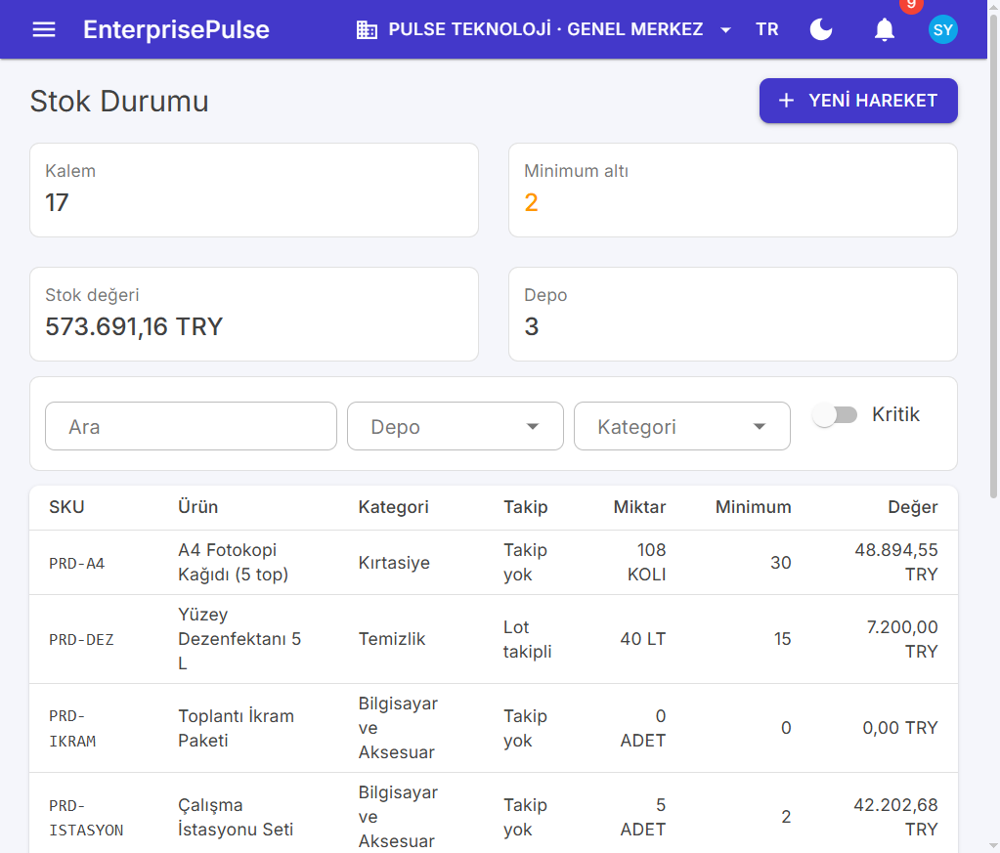
Stok durumu
Amaç
Cari kart, ekstre, kasa ve banka, tahsilat / ödeme, mahsup, çek ve senet, yaşlandırma ve nakit akışı. Muhasebe fişi bu modülün içinde kesilmez; kaynak belge olarak AccountingService tarafından okunur.
Menü: cari hesaplar, kasa ve bankalar, çekler, ödemeler. Ekstre, cari detayındaki alt kaynak veya özel sekmedir (ResourceViews finans bölümü).
Seed
Cariler ve açılış bakiyeleri: InventorySeed.
Kasalar, tahsilat, portföy çeki: SalesSeed.
Masraf ödemesi ve bordro ödemesi kendi modül seed’lerinde PaymentService / kasa hesabını kullanır.
İş kuralları
Cari türü müşteri, tedarikçi veya her ikisidir. Satış belgesi tedarikçiye, alış belgesi müşteriye kesilemez (PartnerSides kontrolleri e-fatura simülasyonunda da vardır).
Ana para birimi dışındaki belgede kur > 0 olmalıdır. Kur tablosunda satır yoksa kullanıcı kuru elle vermek zorundadır (TradeService).
Tahsilat fatura mahsubu PaymentAllocation satırlarıdır. Toplam, belgenin açık tutarını geçemez. İptal, mahsubu ve kasa hareketini tersine çevirir; PaidAmount sıfıra iner.
Çek yaşamı: portföy → bankaya çıkış (deposit) → tahsil (collect) veya karşılıksız (bounce). Verilen çek pay ile kapanır. Her adım ChequeEvent yazar ve JournalSource.CHEQUE adayı olur.
Yaşlandırma kind parametresiyle satış (alacak) veya alış (borç) kovaları üretir. Vade, belge vade tarihi ile DateOnly bugünü arasındadır.
Kasa hareketi elle POST edilmez. Açılış bakiyesi TreasuryService üzerinden, sonraki satırlar tahsilat, ödeme, çek ve bordrodan gelir.
11. CRM
Amaç
Potansiyel müşteri, fırsat aşamaları ve aktivite. Dönüşüm, cari kart ve isteğe bağlı fırsat açar.
Listeler /r/leads, /r/opportunities, /r/crm-activities. Oluşturma bu sayfalara veya diyaloglara yönlenir; genel form kapalıdır.
Seed
WorkSeed: dönüşmüş bir lead ve teklif aşamasında fırsat, açık bir müzakere, gecikmiş bir toplantı. Müşteri MUS-001 ve MUS-002 yoksa adım hiçbir şey yazmadan döner.
İş kuralları
Diskalifiye gerekçe ister. Dönüşüm (convert) cari açar veya var olan cariye bağlar ve fırsat yaratabilir. İkinci kez dönüştürülemez.
Aşama geçişi serbest liste değildir. Kayıp aşamasına LostReason gerekir. Kazanılan fırsat satış siparişini otomatik kesmez; satış modülü ayrıdır.
Aktivite tamamlanınca complete tarihi yazar. Gecikme, gösterge kartında due ile bugün karşılaştırılarak hesaplanır.
Liste: /r/expense-reports. Menü “Masraflarım” herkese açıktır (izin dizisi boş).
Seed
WorkSeed: bir ödenmiş harcırah, bir bekleyen kilometre formu. Kategoriler aynı adımda yoksa açılır. Onay WorkflowService.StartAsync ile gerçek instance üretir; kutu boş kalmasın diye.
İş kuralları
Taslak dışında satır değişmez. Gönderim (submit) bakiyeyi değil onay kutusunu açar.
ExpenseReportWorkflowListener onayda durumu ödemeye hazır yapar, rette forma döner veya kapatır.
pay kasa hareketi, cari değil personel borcu üretir. Muhasebe kaynağı EXPENSE_REPORT ve ödeme anında EXPENSE_PAYMENT (JournalSource).
İptal, ödenmiş formda önce ödemenin geri alınmasını ister. Açık onay varsa CancelForEntityAsync ile düşer.
13. Projeler (Projects)
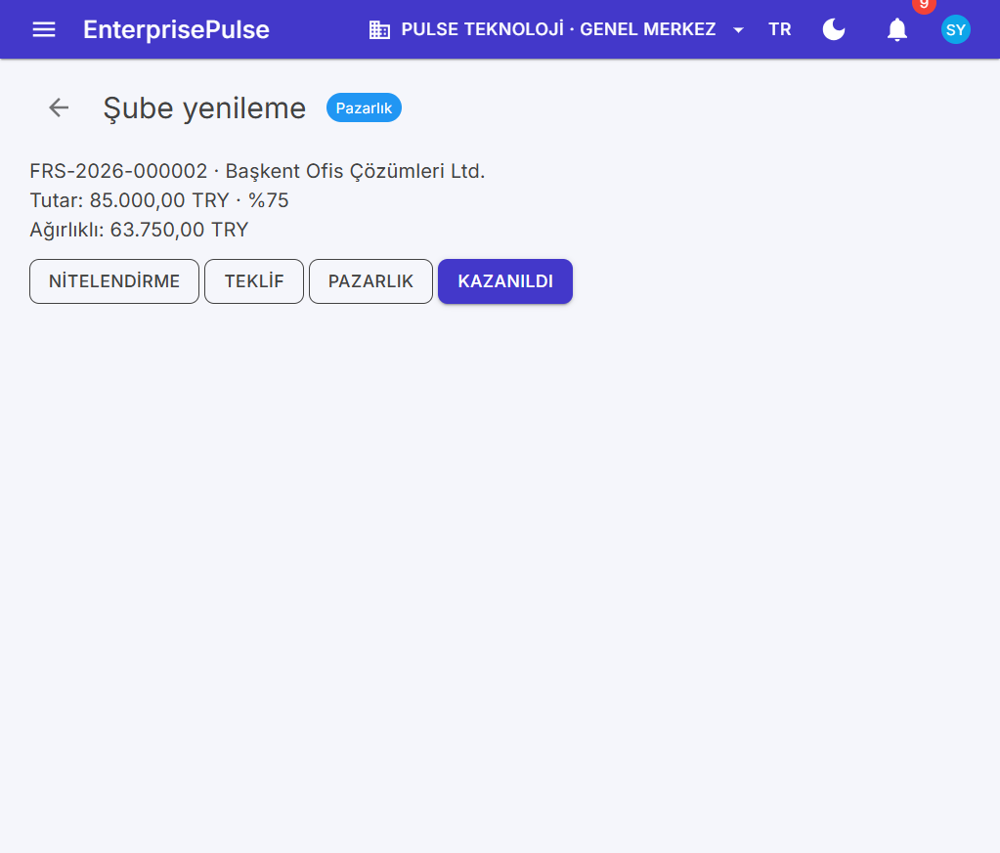
Satış fırsatı
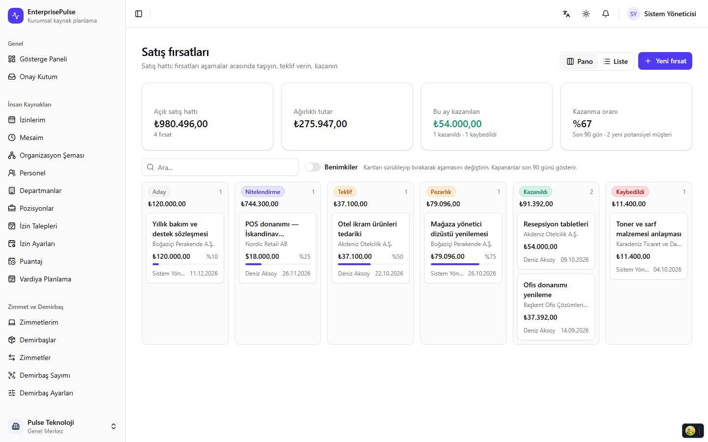
CRM hattı
Amaç
Proje kartı, üye, görev panosu ve zaman çizelgesi. Bordro veya faturalamaya otomatik devretmez.
ProjectService (Modules/Projects/ProjectService.cs). Kancalar: ProjectsHook, ProjectMembersHook, ProjectTasksHook, TimeEntriesHook (WorkHooks.cs). Dashboard parçası WorkDashboard içinde Order = 60.
API
Grup /api/projects:
GET /my-tasks, GET /time?from&to — self-servis.
POST / (projects:create), GET /{id}.
POST /{id}/status (projects:update), POST /{id}/members, POST /{id}/tasks.
POST /tasks/{id}/move — görev durumu, üye de taşıyabilir.
PayrollService (Modules/Payroll/PayrollService.cs). Sınıf özeti: SGK tavanı, kümülatif gelir vergisi ve asgari ücret istisnası dönem hesabına girer. Kancalar aynı dosyada: PayrollPeriodsHook, PayslipsHook, PayslipItemsHook. Dashboard PeopleDashboard bordro parçası Order = 70.
API
İki grup aynı /api/payroll önekini paylaşır, çakışan şablon yoktur.
PayrollEndpoints:
PUT /parameters (payroll:update)
POST /salaries
POST /periods (payroll:create) — yıl ve ay
GET /periods/{id} (payroll:read)
POST /payslips/{id} — kalem düzeltmesi
POST /periods/{id}/approve (payroll:approve)
POST /periods/{id}/pay (payroll:pay)
PeopleEndpoints: GET /api/payroll/mine — oturumdaki personelin pusulaları.
Ücret listesi genel kaynaktır: /r/salary-records. Parametre kartı /r/payroll-parameters. Dönem listesi /r/payroll-periods salt okunur, oluşturma özel aksiyondur.
PeopleSeed (Order = 60) içindeki PayrollAsync: bugünün yılında ekim ayı dönemi yoksa Deniz ve Kerem için ücret ve dönem açar. Dönem zaten varsa bordro kısmı atlanır; işe alım ve eğitim yine devam eder.
İş kuralları
Aynı şirket, yıl ve ay için ikinci açık dönem yoktur.
Pusula, aktif personelin dönem içindeki ücret kartından hesaplanır. Kesintiler parametre tablosundaki oran ve tavanlarla sınırlıdır. Ayrıntı HrRules değil, bordro servisinin iç hesabıdır; davranışı PayrollApiTests kilitler.
Onaydan sonra kalem düzeltmesi kapanır. Ödeme, seçilen kasa hesabından PAYROLL_PAYMENT kaynağı üretir. Tahakkuk fişi JournalSource.PAYROLL (personel borcu 335, SGK 361, vergi 360).
Personel başkasının pusulasını mine ucundan göremez. Yönetici liste için payroll:read kullanır.
Numara serisi PAYROLL (BRD).
15. İşe alım (Recruitment)
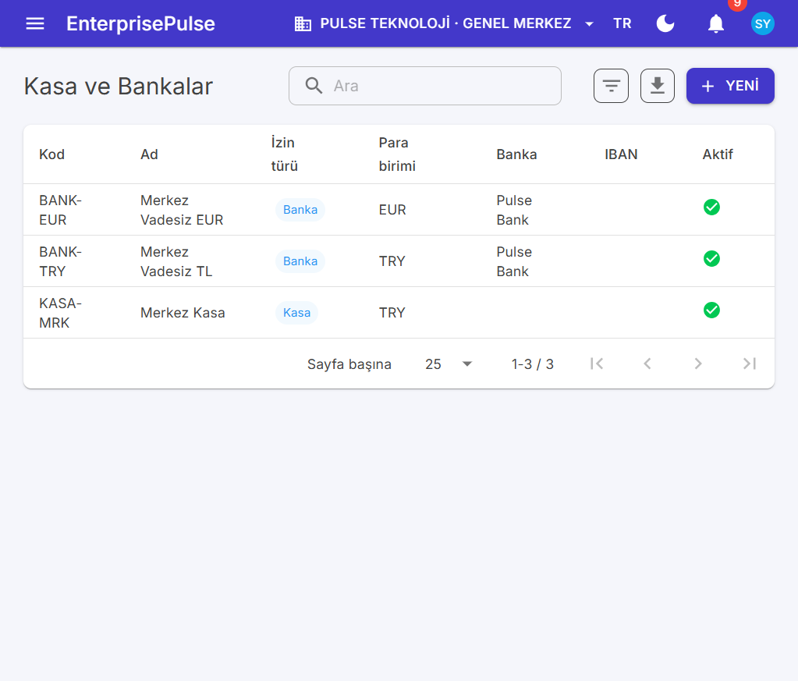
Kasa ve bankalar
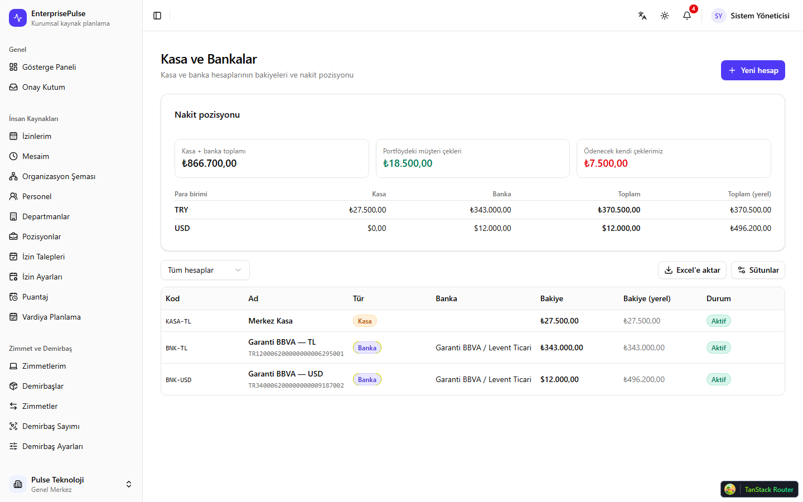
Kasa / banka
Amaç
İlan, aday, başvuru hattı, mülakat, teklif ve işe yerleştirme. Yerleştirme personel kartı açar.
Tek sınıf RecruitmentService (Modules/Recruitment/RecruitmentService.cs). Kancalar: JobPostingsHook, JobApplicationsHook, JobOffersHook, InterviewsHook. Aday kartı genel CRUD olabilir; ilan ve başvuru servisten yürür. Dashboard parçası PeopleDashboardOrder = 75.
API
Grup /api/recruitment (PeopleEndpoints):
POST /postings (recruitment:create), POST /postings/{id}/publish (recruitment:update)
POST /candidates, POST /postings/{id}/applications
GET /applications/{id} (recruitment:read)
POST /applications/{id}/stage — ret gerekçesi
POST /applications/{id}/interviews, POST /interviews/{id}/feedback
POST /applications/{id}/offers, POST /offers/{id}/accept
PeopleSeed.RecruitmentAsync: yayımlanmış bir ilan, bir aday, mülakatı tamamlanmış ve işe alınmış bir başvuru. Deniz mülakatçı olarak geçer.
İş kuralları
Taslak ilan başvuruya kapalıdır. publish sonrası aday bağlanır.
Aşama atlamak serbest değildir; ret aşaması gerekçe ister. Aktivite satırı (ApplicationActivity) her geçişi yazar.
Teklif kabul edilmeden hire personel açmaz. hire sicil numarası EMPLOYEE serisinden (PRS) üretir ve adayı personel kartına bağlar.
Mülakat geri bildirimi katılımcı kullanıcıdan gelir. interviews/mine oturumdaki kullanıcının davetleridir. Personel rolünde recruitment:read yoktur; bu uç izin sormaz, yalnız kendi satırını döner.
Numara JOB_POSTING (ILN).
16. Performans (Performance)
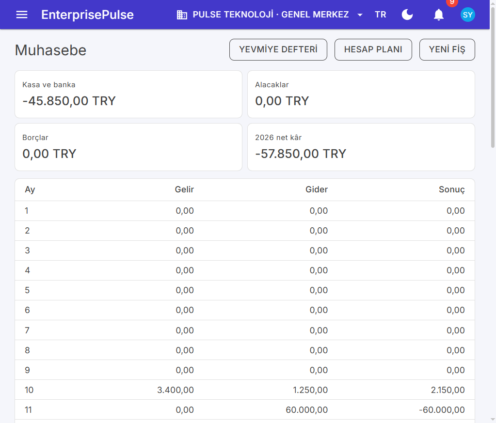
Muhasebe
Amaç
Yetkinlik kataloğu, değerlendirme dönemi, hedef, öz değerlendirme ve yönetici notu.
PerformanceService (Modules/Performance/PerformanceService.cs). Kancalar: ReviewCyclesHook, PerformanceReviewsHook. Yetkinlik genel listedir (/r/competencies). Dashboard Order = 80.
API
Grup /api/performance:
POST /cycles (performance:create), POST /cycles/{id}/launch (performance:update)
GET /reviews/{id} (performance:read)
POST /reviews/{id}/goals, /self, /manager — sahip veya yönetici, ek izin her zaman aranmaz
GET /mine
Web
MyReviewsPage.razor → /performance/my. Dönem listesi /r/review-cycles. Değerlendirme satırı dönem sayfasından açılır; genel form “dönem başlayınca oluşur” diye kilitlidir.
Seed
PeopleSeed.PerformanceAsync: Kerem için tamamlanmış bir dönem ve hedef. Aynı adım yıl içinde tekrar etmez.
İş kuralları
launch aktif personel için PerformanceReview satırlarını ve dönem yetkinliklerini kopyalar. İkinci launch aynı dönemi şişirmez.
Öz değerlendirme yalnız değerlendirilen personelin kullanıcısından gelir. Yönetici notu, personelin managerId zincirindeki kullanıcıdan veya performance:update yetkisinden gelir.
Puan aralığı yetkinlik ölçeği dışına çıkamaz. Dönem kapanınca hedef eklenmez.
Hedef ağırlıkları toplamı, dönem kapanışında 100’ü geçemez (servis kaydı sırasında kontrol eder).
17. Eğitim (Training)
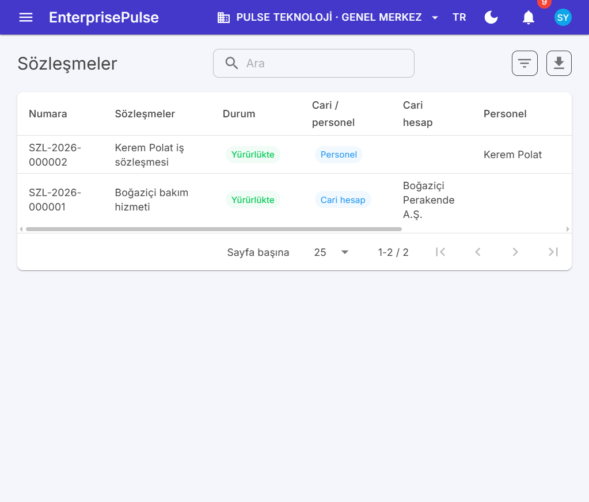
Sözleşmeler
Amaç
Kurs kataloğu, oturum, kontenjan, yoklama ve zorunlu eğitim uyumu.
PeopleSeed.TrainingAsync: Kerem’in kayıtlı olduğu zorunlu bir kurs ve planlı oturum. Uyum ekranı bu yüzden en az bir satır gösterir.
İş kuralları
Bitiş, başlangıçtan sonra olmalıdır. Kontenjan boş veya sıfırdan büyük.
Kayıt yalnız PLANNED oturuma yapılır. SelfEnrollment kapalıysa başkası adına training:update gerekir. Aynı personel iki kez yazılmaz. Dolu kontenjan reddedilir.
Yoklama sonucu ATTENDED veya NO_SHOW. Puan 0–100. Oturum complete ile kapanır; ikinci yoklama yoktur.
Uyum raporu, kursun zorunlu bayrağı ile personelin katıldığı oturumları karşılaştırır. Süresi geçmiş zorunlu kurs gösterge kartına düşer.
18. Destek (Support)
Amaç
SLA’lı talep kuyruğu: açma, atama, yorum, durum, kapatma, puan ve yeniden açma.
SupportService (Modules/Support/SupportService.cs). Kancalar: TicketsHook, TicketCommentsHook. Kategori ve SLA genel kaynaktır. OpsDashboard destek parçası Order = 90. Seed OpsSeed (Order = 70).
API
Grup /api/support (OpsEndpoints):
POST /tickets — giriş yapmış herkes kendi talebini açar.
GET /tickets/{id} — sahip, atanan veya support:read.
PUT /tickets/{id}, POST /tickets/{id}/status (support:update).
ContractService (Modules/Contracts/ContractService.cs), aynı zamanda IScheduledJob: Id = contracts-daily, cron 0 7 * * *. Kanca: ContractsHook. Tür kartı /r/contract-types. Dashboard Order = 95.
API
Grup /api/contracts:
POST / (contracts:create), GET /{id}
POST /{id}/activate — imza tarihi (contracts:update)
POST /{id}/renew, POST /{id}/terminate
POST /run — şirketin hatırlatmasını beklemeden çalıştırır (contracts:update)
Web
ContractPage.razor → /contracts/{Id}. Liste /r/contracts. Olaylar alt kayıttır, genel formdan yazılmaz.
Seed
OpsSeed.ContractsAsync: MUS-001 ile bitişi yaklaşan bir hizmet sözleşmesi ve Kerem sorumlusu. Günlük işin dolu bir adayı olsun diye bitiş tarihi bugüne yakındır.
İş kuralları
Taslak sözleşme numara alır (CONTRACT, SZL) ama yükümlülük doğurmaz. activate imza tarihini ve durumu yazar.
Yenileme yeni bitiş ve ContractEvent üretir; eski satırı silmez.
Fesih gerekçe ve tarih ister. Feshedilmiş sözleşme yeniden aktive edilmez.
Günlük iş, tüm şirketlerde (WithoutTenant sonrası kendi ActAs döngüsü) bitiş penceresine giren sözleşmeler için sorumlu kullanıcıya bildirim bırakır. Aynı pencere için ikinci e-posta, olay satırına bakarak engellenir.
Cari ve personelden en az biri bağlı olmalıdır. Saf iç protokol personel kartına, satış sözleşmesi cariye gider.
20. Bütçe (Budgets)
Amaç
Bütçe kalemi, yıllık plan, onay, gerçekleşme satırı ve eşik uyarısı.
BudgetService (Modules/Budgets/BudgetService.cs), IScheduledJob: budgets-daily, cron 0 8 * * *. Kancalar: BudgetsHook, BudgetLinesHook. Kalem kartı genel CRUD olabilir (POST /api/budgets/items de vardır). Dashboard Order = 100.
API
Grup /api/budgets:
POST /items, POST / (budgets:update)
GET /{id}
POST /{id}/plan, POST /{id}/approve (budgets:approve), POST /{id}/reopen
POST /entries — gerçekleşme
Web
BudgetPage.razor → /budgets/{Id}. Liste /r/budgets. Plan satırı ve uyarılar sayfanın çocuklarıdır; genel form kilitlidir.
Seed
OpsSeed.BudgetsAsync: içinde bulunulan yıl için onaylı şirket bütçesi, bir iki kalem ve gerçekleşme. Yönetici ctx.AdminId onaylayan olarak yazılır.
İş kuralları
Taslak bütçeye gerçekleşme yazılmaz. approve planı kilitler. reopen yeniden taslağa alır; onay izi BudgetEvent olarak kalır.
Gerçekleşme tutarı negatif olamaz. Satır, kalemin yıllık planını aşınca BudgetAlert açılır. Günlük iş eşiği geçen kalemler için budgets:read sahiplerine bildirim yollar.
Aynı yıl ve kapsam için ikinci onaylı bütçe yoktur.
Uyarı kapatılması olay günlüğüne yazılır; satır silinmez.
21. Filo (Fleet)
Amaç
Araç kartı, zimmet, yakıt, servis, belge ve tarihi geçen evrak uyarısı.
Liste /r/vehicles. Alt kayıtlar (yakıt, servis, belge, km) araç sayfasındandır.
Seed
OpsSeed son adımı: Kerem’e zimmetli bir araç, km, yakıt ve süresi yaklaşan bir belge (sigorta veya muayene). Günlük işin bildirim üreteceği kayıt budur.
İş kuralları
Aynı araca iki açık zimmet yazılmaz. İade km’yi VehicleOdometerReading olarak düşer. Yeni km, son okumadan küçük olamaz.
Yakıt litresi ve tutarı sıfırdan büyük olmalıdır. Tüketim, iki km okuması arasındaki mesafeye bölünerek araç sayfasında gösterilir.
Belge bitiş tarihi geçmişse veya pencere içindeyse fleet-daily zimmetli personele ve fleet:read rolüne bildirim bırakır. Servis kaydı da aynı pencerededir.
Araç satışı veya hurdası durum alanıyla kapanır; açık zimmet varken pasifleşmez.
22. Muhasebe (Accounting)
Amaç
Tekdüzen hesap planı, manuel yevmiye, kaynak belgelerden otomatik fiş, mizan, bilanço, gelir tablosu ve dönem kilidi.
| Sınıf | Dosya | Sorumluluk | | --- | --- | --- | | AccountingService | AccountingService.cs | Hesap, fiş, kilit, özet. IScheduledJobaccounting-posting, cron 30 2 * * * | | AccountingService.Posting | AccountingService.Posting.cs | Kaynak belge → fiş adayı | | AccountingService.Reports | AccountingService.Reports.cs | Mizan, bilanço, gelir tablosu | | AccountingMath | AccountingMath.cs | Borç = alacak, mizan, gelir tablosu | | PostingRules | AccountingMath.cs sonu | Kaynak türüne göre satır şablonu | | AccountingChart / ACC | AccountingChart.cs | Sistem hesap kodları | | AccountingSeed | AccountingSeed.cs | Order = 80 | | AccountingDashboard | AccountingSeed.cs | Order = 60 | | Kancalar | AccountingSeed.cs | Hesap planı, fiş ve satır kilitli |
Sistem hesapları (ACC): kasa 100, alınan çek 101, banka 102, verilen çek 103, alıcılar 120, alacak senetleri 121, ticari mal 153, indirilecek KDV 191, satıcılar 320, borç senetleri 321, diğer ticari borçlar 329, personele borçlar 335, diğer borçlar 336, ödenecek vergi 360, SGK 361, hesaplanan KDV 391, sermaye 500, yurt içi satışlar 600, satıştan iadeler 610, SMM 621, olağandışı gelir 679, olağandışı gider 689, direkt ilk madde 710, yansıtma 711, işçilik yansıtma 721, genel üretim yansıtma 731, genel yönetim 770. IsSystem hesap silinemez ve pasifleştirilemez.
Listeler /r/ledger-accounts ve /r/journal-entries salt okunurdur. ResourceViews.Accounting oluşturmayı özel sayfaya alır.
Seed
AccountingSeed (Order = 80): hesap planını InstallChartAsync ile yükler, demo fiş ve kilit tarihi yoksa örnek kesinleşmiş fiş bırakır. Satış ve alış belgeleri önceki seed’lerde oluştuğu için RunCompanyAsync onları bekleyen aday olarak görebilir. Seed, şirket bağlamında ActAs kullanır.
İş kuralları
Hesap kodu 100 veya 100.01 biçimindedir (AccountingChart.IsValidCode). Üst hesap yoksa alt hesap açılmaz. Kod şirket içinde benzersizdir. Alt hesabı veya satırı olan hesap silinmez; pasifleştirilir. Sistem hesabı pasifleşmez.
Fiş en az bir satır, her satırda borç veya alacaktan tam biri, ikisi de ≥ 0. Toplam borç = toplam alacak. Pasif hesap, bilinmeyen cari ve personel reddedilir.
Yalnız DRAFT ve MANUAL fiş değişir veya silinir. post durumu POSTED yapar. Ters kayıt yalnız kesinleşmiş manuel fişte, fiş tarihinden önceki bir güne yazılamaz, ikinci kez terslenemez. Otomatik fişin tersi, kaynak belgenin iptalidir.
Dönem kilidi LockedUntil. Bu tarih ve öncesine fiş girilmez. Kilit tarihi bugünden (AccountingClock, İstanbul) ileri olamaz. İzin accounting:close.
RunCompanyAsync ve gece işi, kaynak belge başına bir fiş açar. Zaten açık fiş varsa Planned kaydı atlar (skipped). İptal edilen belge, kesinleşmiş fişi tersler.
Mizan aralığında from <= to. Bilanço tek tarih. Gelir tablosu dönem hareketinden 6 ve 7 hesaplarını okur. Birim test AccountingProductionRulesTests.
23. e-Fatura (Einvoice)
Amaç
Giden satış faturası ve gelen alış faturası için UBL-TR kuyruk simülasyonu. Gerçek GİB entegrasyonu yoktur. Durum makinesi ve XML üretimi gerçek kurallara yaklaşır; taşıma simülasyondur.
Liste /r/e-invoices salt okunurdur. Menü “e-Fatura” muhasebe grubundadır.
Seed
EInvoiceSeed (Order = 82), muhasebe ve satış belgelerinden sonra çalışır. Gönderilmiş veya kuyrukta bir giden fatura ve olay satırları bırakır. Ayar yoksa gönderici etiketi ve varsayılan profili yazar.
İş kuralları
Gönderici etiket urn:mail:ad@alan.com (EInvoiceRules.AliasPattern). GİB numarası 3 karakter + 4 hane yıl + 9 hane sıra (GibNumber). Seri EINVOICE (EPF) veya EARCHIVE (EPA).
İptal edilmiş satış faturası gönderilemez. Yeniden gönderim yalnız giden ve ERROR durumundaki kayıt içindir.
Ticari fatura (TICARIFATURA) teslimden sonra 8 gün (ResponseDays) içinde ACCEPT veya REJECT. Ret gerekçe ister. Temel faturada kabul beklenmez.
Gelen kayıt (record) alış faturası açar (PurchaseInvoiceService). Reddedilmiş fatura kaydedilmez. Ticari fatura önce kabul edilmiş olmalıdır. Zaten alış faturası varsa ve iptal değilse ikinci kayıt yoktur.
Simüle gelen fatura, tedarikçi türünde ve şirket ana para birimindeki cari ister. Alış fiyatı olan en az bir varyant yoksa simülasyon durur.
Satış faturası iptali, e-fatura durumuna bakar (CancelCheck). GİB’e gitmiş ve iptal penceresi kapanmış fatura önce e-fatura tarafında çözülür.
sync her dakika kuyruktaki zarfı bir sonraki koda taşır (1000 kuyruk, 1150 şema hatası, 1200 işlendi, 1300 tamam, KABUL, RED, IPTAL). Hata kodu üretimi deterministik kuralladır, ağ çağrısı yoktur.
24. Üretim (Production)
Amaç
Ürün ağacı, maliyet yuvarlama, iş emri, üretim fişi (mamul giriş, bileşen sarf) ve malzeme ihtiyaç listesi (MRP benzeri). Eksik bileşen satın alma talebine dönebilir.
Listeler /r/bill-of-materials ve /r/work-orders salt okunur. ResourceViews.Production oluşturma adreslerini yukarıdaki sayfalara bağlar.
Seed
ProductionSeed (Order = 81): mamul kartları, örnek reçeteler (işçilik ve genel gider), taslak ve üretimde iş emirleri, en az bir üretim fişi. Stok seed’indeki hammaddeler yoksa reçete satırı düşer. Numara WORK_ORDER (IEM).
İş kuralları
Mamul ve bileşen GOODS olmalıdır. Hizmet üretilemez. SERIAL takipli ürün üretimde desteklenmez. Pasif varyant reçeteye girmez.
Reçete adı ve en az bir bileşen zorunlu. Parti miktarı > 0. Bileşen bir kez listelenir, miktarı > 0, fire oranı ≥ 0. Ürün kendi bileşeni olamaz. ProductionMath.CreatesCycle alt reçeteler dahil döngüyü reddeder.
Kod benzersizdir. İş emri bağlanmış reçete silinmez; pasifleştirilir. Pasif reçete varsayılan olamaz ve yeni iş emrine bağlanmaz.
İş emri: bitiş ≥ başlangıç, depolar aktif. Yalnız taslak düzenlenir (CanEdit). release taslaktan çıkar. Üretim fişi olan emir iptal edilmez (CanCancel); tamamlanır. complete yalnız üretimdeki emirdedir.
Fiş miktarı > 0 ve kalan miktarı aşamaz. Sarf, iş emrindeki bileşenlerle sınırlıdır ve negatif olamaz. Lot stoku yetmezse fiş durur. Bitiren fiş, kalan sarfı kapatır (ProductionMath “finishing record”).
Mamul girişi ve bileşen çıkışı StockMovementService üzerinden aynı işlemde yazılır. Muhasebe kaynağı PRODUCTION (710 / 711 / 721 / 731).
MRP (RequirementsAsync) açık iş emirlerinin bileşen ihtiyacını stok ve açık satın alma ile karşılaştırır. CreatePurchaseRequestAsync seçilen satırlardan PurchaseRequestService çağırır. Talep yine PURCHASE_REQUEST onayına girer.
Plan ucu (/plan) reçeteyi verilen miktara patlatır, eldeki stoğu ve malzeme + işçilik + genel gider maliyetini döner. Kaydetmez.
25. Ticaret motoru (Trade)
Amaç
Satış ve satın alma belgelerinin ortak satır hesabı: para birimi, kur, iskonto, KDV, satır ve belge toplamı. Ayrı tablo, ayrı endpoint ve ayrı ekran yoktur. Modül, diğerlerinin çağırdığı saf servistir.
Ana entity / DbSet
Kendi DbSet’i yoktur. Okuduğu tablolar: Currencies, ExchangeRates, TaxRates, ProductVariants, Units. Yazdığı yer belge satırının lineTotal, vatAmount, discountAmount alanları ve başlığın subTotal, vatTotal, grandTotal, exchangeRate alanlarıdır. Üretilmiş satış ve satın alma entity’lerinde bu alanlar vardır (Entities.Sales.g.cs, Entities.Purchasing.g.cs).
Servisler
| Sınıf | Dosya | Sorumluluk | | --- | --- | --- | | TradeService | Modules/Trade/TradeService.cs | Kur çözümleme, varyant doğrulama, satır toplamı | | DocumentMath | Modules/Trade/DocumentMath.cs | İskonto ve KDV’nin saf formülü |
[ModuleService] ile DI’a girer. Tüketiciler: SalesQuoteService, SalesOrderService, SalesInvoiceService, SalesReturnService, DeliveryNoteService, PurchaseOrderService, PurchaseInvoiceService, SupplierQuoteService, GoodsReceiptService. Seed’ler de aynı servisi dolaylı kullanır çünkü belgeyi servisten yaratırlar.
Doğrudan uç yoktur. Hatalar, belge ucunun 400 cevabında Türkçe satır numarasıyla döner (“Satır 2: iskonto %0-100 arasında olmalı”).
Web
Ortak bir sayfa yoktur. Teklif, sipariş ve fatura formları satır ızgarasında miktar, fiyat, iskonto ve KDV gösterir. Toplamlar sunucunun döndürdüğü başlık alanlarıdır. İstemci tutarı kaynak kabul edilmez.
Seed
Kurlar DataSeeder.SeedCurrenciesAsync (TRY 1, USD ve EUR alış/satış). KDV oranları CompanyBootstrap. Belgeler InventorySeed ve SalesSeed.
İş kuralları
Para birimi aktif bir Currency olmalıdır. Şirket ana para biriminde kur 1’dir. Yabancı birimde kur > 0 istenir; verilmezse bugünün ExchangeRate satış kuru okunur. Satır yoksa “kuru elle girin”.
En az bir satır. Miktar > 0. Birim fiyat ≥ 0. İskonto ve KDV oranı 0 ile 100 arasındadır.
Varyant seçildiyse kart ve varyant aktif, ürün silinmemiş olmalıdır. Hizmet satırında stok hareketi kesilmez ama tutar hesabı aynıdır (SRV-KURULUM).
İskonto satır tutarı üzerinden, KDV iskonto sonrası tutar üzerinden hesaplanır (DocumentMath). Başlık toplamı satırların yuvarlanmış toplamıdır. Yuvarlama farkı son satıra yıkılmaz; her satır kendi parasal yuvarlamasını taşır. Muhasebe fişi bu başlık toplamını kullanır, yeniden çarpmaz.
Belge tarihi ile kur tarihi farklı olabilir. Kayıt anındaki kur, başlıkta saklanır. Sonraki kur değişikliği eski belgeyi güncellemez.
26. Testler, seed, çalıştırma, codegen
26.1 Seed sırası
DataSeeder.SeedAsync her API açılışında (App:SeedOnStartup) ve her adım idempotent olacak şekilde çalışır. İlk yarı WithoutTenant:
Metadata’daki izin kodlarını ekle (var olanı ezme).
TRY / USD / EUR / GBP ve bugünün kuru.
PULSE ve PULSE-LOJ, şubeler.
CompanyBootstrap.InitializeAsync — vergi, birim, seri, rol, üç onay akışı.
Demo kullanıcılar ve 12 örnek personel kullanıcısı.
Sonra ISeedStep listesi Order ile, her adımda ChangeTracker.Clear() ve ActAs(pulse, admin, superAdmin: true):
| Order | Sınıf | Dosya | İçerik | | --- | --- | --- | --- | | 10 | HrSeed | Modules/Hr/HrSeed.cs | Departman, pozisyon, personel, izin, tatil, vardiya, puantaj | | 20 | AssetSeed | Modules/Assets/AssetSeed.cs | Kategori, konum, 16 demirbaş, zimmet, sayım | | 30 | InventorySeed | Modules/Inventory/InventorySeed.cs | Ürün, depo, stok, cari, satın alma zinciri | | 40 | SalesSeed | Modules/Sales/SalesSeed.cs | Kasa, teklif, sipariş, irsaliye, tahsilat, çek | | 50 | WorkSeed | Modules/Crm/WorkSeed.cs | CRM, masraf, proje | | 60 | PeopleSeed | Modules/Payroll/PeopleSeed.cs | Bordro, işe alım, performans, eğitim | | 70 | OpsSeed | Modules/Support/OpsSeed.cs | Destek, sözleşme, bütçe, filo | | 80 | AccountingSeed | Modules/Accounting/AccountingSeed.cs | Hesap planı ve örnek fiş | | 81 | ProductionSeed | Modules/Production/ProductionSeed.cs | Reçete ve iş emri | | 82 | EInvoiceSeed | Modules/Einvoice/EInvoiceSeed.cs | e-Fatura kuyruğu |
Adım kendi içinde “varsa dön” der. Örneğin SalesSeed teklif görürse belge yaratmaz ama kasaları kontrol eder. Lojistik şirketine bu adımlar bilinçli olarak yazmaz.
Seed’i kapatmak için appsettings içinde SeedOnStartup: false. Migration yine uygulanır.
26.2 Çalıştırma
Gereksinim: .NET 10 SDK, Docker.
cd c:\github\EnterprisePulse.NET
docker compose up -d
dotnet run --project src/EnterprisePulse.Api --launch-profile http
dotnet run --project src/EnterprisePulse.Web --launch-profile http
API: http://localhost:5100 — Swagger /swagger, Hangfire /hangfire, sağlık GET /api/health.
Web: http://localhost:5101.
Postgres localhost:5442, veritabanı enterprise_pulse, kullanıcı ve parola erp.
İlk API açılışı migration + seed nedeniyle uzundur. Sonraki açılışlar “varsa dön” dallarına girer.
Giriş: admin@enterprisepulse.dev / Admin123!. Şirket üst çubuktan seçilir. Pulse Lojistik’te listelerin boş olması seed tasarımıdır.
26.3 Testler
dotnet test
Birim test projesi Postgres istemez. Entegrasyon testleri 5442’de ayakta bir Postgres ister. ApiFactory her koşu için ep_test_<sekiz karakter> veritabanı açar, ortamı Testing yapar, IBackgroundJobs yerine NoJobs koyar. Hangfire sunucusu ve recurring job bu ortamda kaydolmaz. Hız limiti gevşetilir.
README’deki son tam koşu 48 birim + 27 entegrasyon = 75 geçendir. Sayı, yeni test eklendikçe değişir; kapı dotnet test çıkış kodudur.
Entegrasyon istemcisi LoginAsync ile admin jetonu alır ve x-company-id başlığını Pulse şirketine sabitler. Yeni bir uç ekleyen, ilgili *ApiTests dosyasına mutlu yol ve bir guard cümlesi (400/409) eklemelidir. Saf para hesabı birim teste gider, veritabanına değil.
Betik, companyId / deletedAt / updatedAt / id alanlarına bakarak arayüzleri basar. İlişki gezinmeleri [JsonIgnore] olur. passwordHash, twoFactorSecret, tokenHash da JSON’a çıkmaz.
Üretilen dosyayı elle yamamak bir sonraki çalıştırmada silinir. İş kuralı Modules altına, alan etiketi locale JSON’una, kolon ve ilişki Prisma modeline yazılır.
Şema değişince:
Prisma modelini güncelle, locale anahtarını ekle.
node tools/codegen/emit-csharp.mjs.
dotnet ef migrations add <Ad> --project src/EnterprisePulse.Core --startup-project src/EnterprisePulse.Api.
API’yi bir kez çalıştır (açılış MigrateAsync uygular) veya dotnet ef database update.
Servis, endpoint, ResourceViews ve gerekirse ISeedStep.
dotnet test.
metadata.json menüsü (navigation), izin kataloğu (permissions), rol paketleri (roles) ve numaralar (sequences) da bu dosyanın içindedir. Codegen menüyü şema modüllerinden üretir. Elle menü eklemek için tools/codegen/meta.mjs içindeki gezinme tanımı değiştirilir, JSON elle tutulmaz.
26.5 Yeni modül kontrol listesi
Prisma modeli ve locale.
Codegen + migration.
Modules/<Ad>/<Ad>Service.cs üzerinde [ModuleService]. Belge kilitlenecekse ManagedRecordHook.
Onay varsa IWorkflowListener ve CompanyBootstrap.EnsureWorkflowAsync (veya ayar ekranından tanım).
Endpoints/<Ad>Endpoints.cs ve ModuleEndpoints.MapModules içine bir satır.
Özel Razor + ResourceViews kaydı. Basit kart ise yalnız metadata yeter.
IDashboardProvider ve gerekiyorsa IScheduledJob (Id, Cron, RunAsync). Runner kiracı filtresini kapatır; iş şirket döngüsünü kendisi kurar.
ISeedStep.Order önceki modüllerin kimliklerine bağlıysa onlardan büyük seçilir (üretim 81, çünkü stok 30 ve muhasebe 80).
Birim test (matematik) ve entegrasyon testi (HTTP + izin).
Bu sıra, depodaki muhasebe, e-fatura ve üretim eklerinin izlediği yoldur. Platform çekirdeğine (AppDbContext filtreleri, ResourceService, WorkflowService, NumberingService) modül adına özel dal eklenmez. Kaynak türü yeni bir JournalSource değeriyle PostingRules içine girer.
EnterprisePulse — EnterprisePulse.NET. Bu HTML, markdown kaynaktan üretilmiştir; güncelleme için md dosyasını düzenleyin.